عائلة ISO 22002:2025
متطلبات مشتركة للبرامج الأولية، مع أجزاء حسب النشاط مثل التصنيع وخدمات التموين.
تأهيل ومراجعة أنظمة الجودة وسلامة الغذاء للمصانع والشركات، من تحليل الفجوات إلى التطبيق والتدريب.

نظرة سريعة على الإصدارات الجديدة ومفاهيم التطبيق التي تهم فرق الجودة وسلامة الغذاء.
متطلبات مشتركة للبرامج الأولية، مع أجزاء حسب النشاط مثل التصنيع وخدمات التموين.
الإصدار الجديد لنظام إدارة الجودة العام، مكمل لنظام سلامة الغذاء وليس بديلًا عنه.
ثقافة سلامة الغذاء، التلامس العرضي للحساسية، المراقبة البيئية، والدفاع والتتبع الغذائي.
الهدف ليس إعداد مستندات فقط، بل بناء نظام يفهمه الفريق ويستطيع تشغيله ومراجعته وتحسينه باستمرار.
ربط كل متطلب بإجراء وسجل ومسؤول واضح داخل المنشأة.
تحديد الفجوات والمخاطر وترتيب خطوات التحسين حسب الاحتياج.
تدريب ومتابعة تساعد فريق الجودة على التطبيق بثقة.
مراجعات داخلية وإجراءات تصحيحية قابلة للمتابعة والقياس.
من التقييم الأولي إلى التطبيق والمتابعة، بخطوات واضحة وواقعية.
تحليل المخاطر، تحديد نقاط التحكم، إعداد الخطط والسجلات ودعم التطبيق.
تفاصيل الخدمة ←تطوير أنظمة الإدارة والتوثيق والمراجعة الداخلية والاستعداد للتدقيق.
تفاصيل الخدمة ←تقييم الفجوات، تحديد حالات عدم المطابقة، ووضع إجراءات تصحيحية.
تفاصيل الخدمة ←تنظيم متطلبات سلامة الغذاء والوثائق والسجلات اللازمة للتفتيش.
تفاصيل الخدمة ←تنفيذ مراجعات داخلية وتقييم الموردين ومتابعة CAPA والتحسين.
تفاصيل الخدمة ←برامج عملية في HACCP وGMP وISO والمراجعة الداخلية وثقافة سلامة الغذاء.
عرض البرامج التدريبية ←ربطك بمقدمي خدمات مناسبين بحسب احتياج منشأتك، مثل شركات مكافحة الآفات والمعايرة، ومورّدي المنظفات، والمعامل المعتمدة لإجراء التحاليل، وجهات وبرامج المنح والتمويل.
كيف يعمل التنسيق؟ ←شعارات لجهات وعلامات تجارية ضمن الخبرات المهنية والاستشارية والتدريبية.
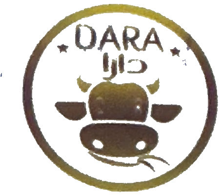
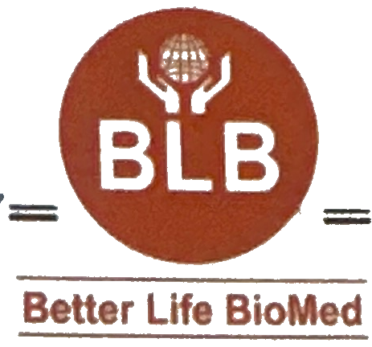
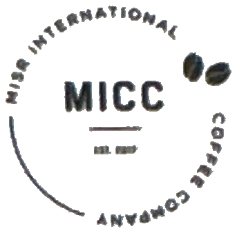
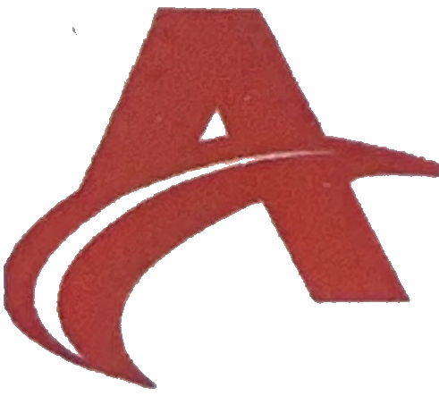
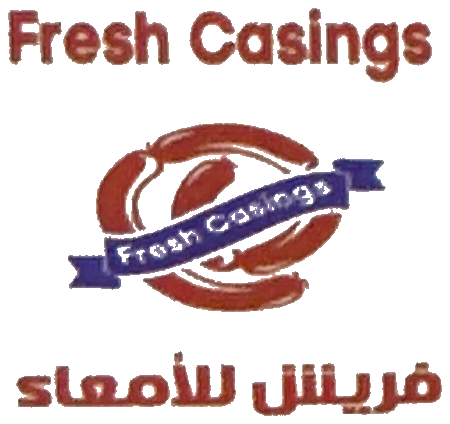
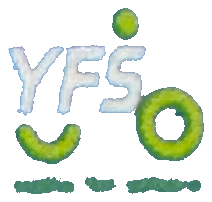
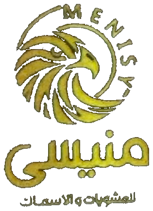
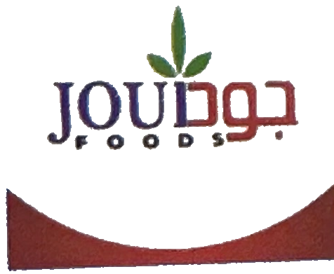
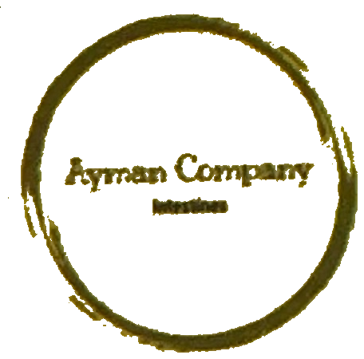
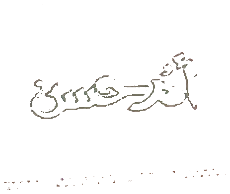
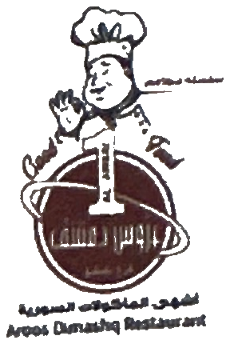
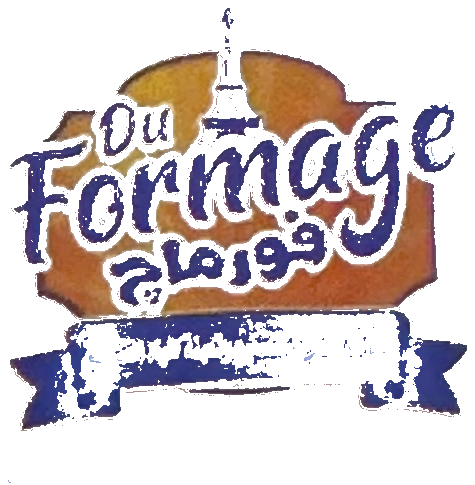
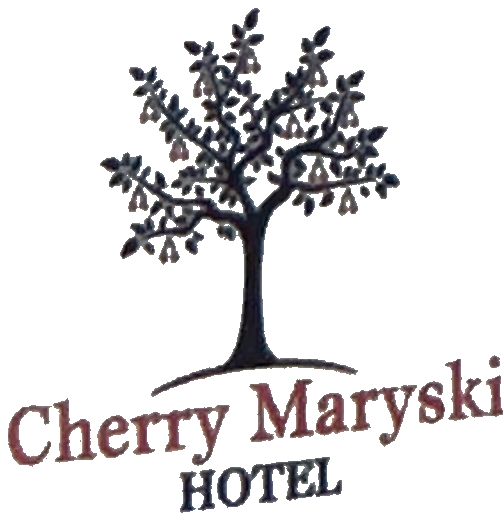
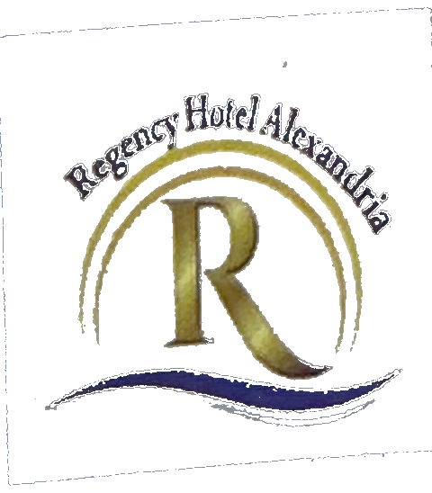
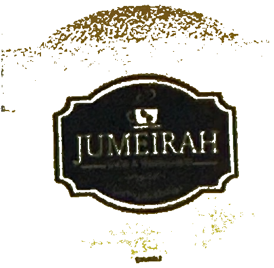
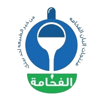
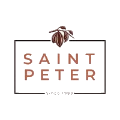
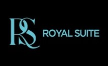
مساندة استشارية لمنشأة غذائية في الاستعداد لمتطلبات القائمة البيضاء والتفتيش.
اجتياز التفتيش والوصول إلى القائمة البيضاء.
لم يُذكر اسم المنشأة. هذه نتيجة لحالة محددة وليست ضمانًا لنتيجة مماثلة؛ فالنتائج تعتمد على ظروف المنشأة ومتطلبات الجهة المختصة.
إعداد واستكمال ملفات اعتماد Rainforest Alliance، مع تنظيم الوثائق والسجلات الداعمة وتجهيزها للمراجعة.
تدريب للطلبة وحديثي التخرج وفرق المصانع، يربط المتطلبات بالتطبيق والسجلات المستخدمة في بيئة العمل.
تختلف المواعيد والتفاصيل حسب البرنامج. تواصل لمعرفة موعد التسجيل القادم ومحتوى الدورة المناسب لك.


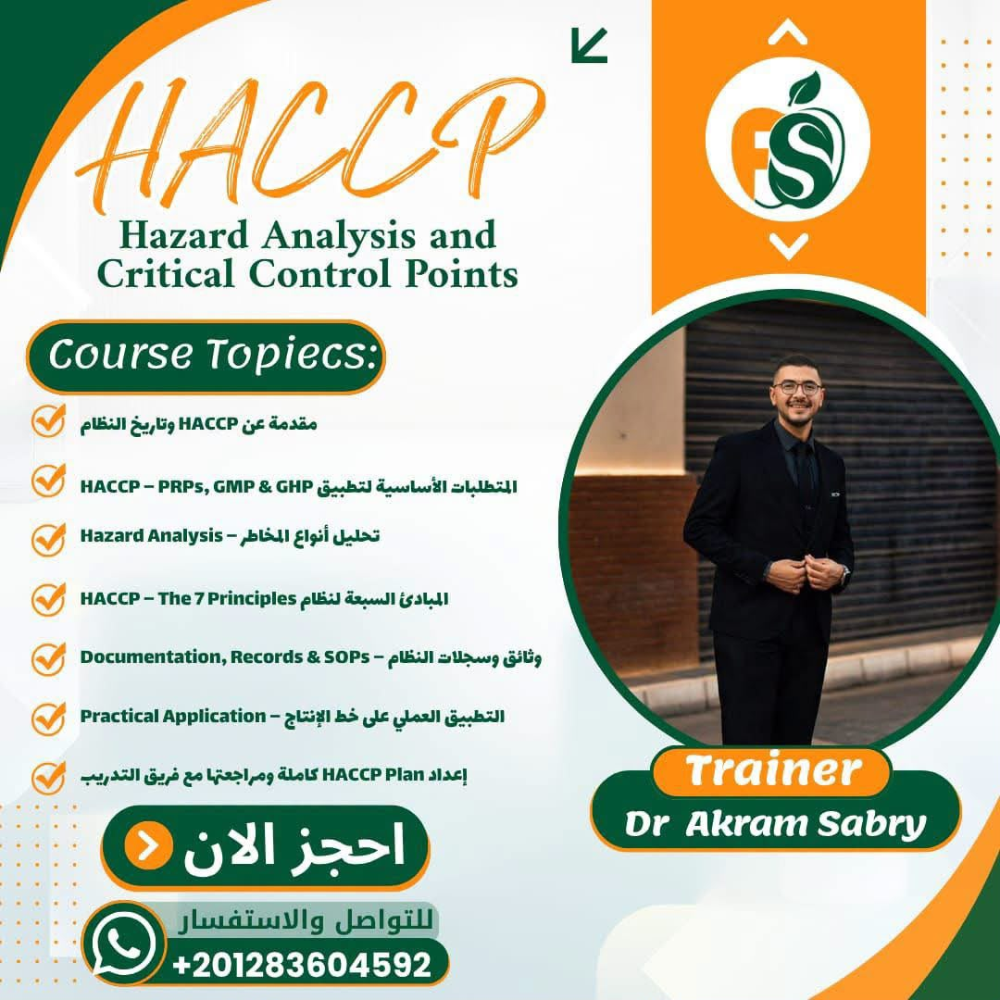
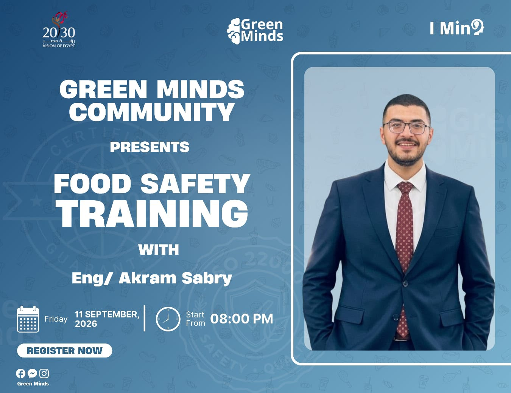
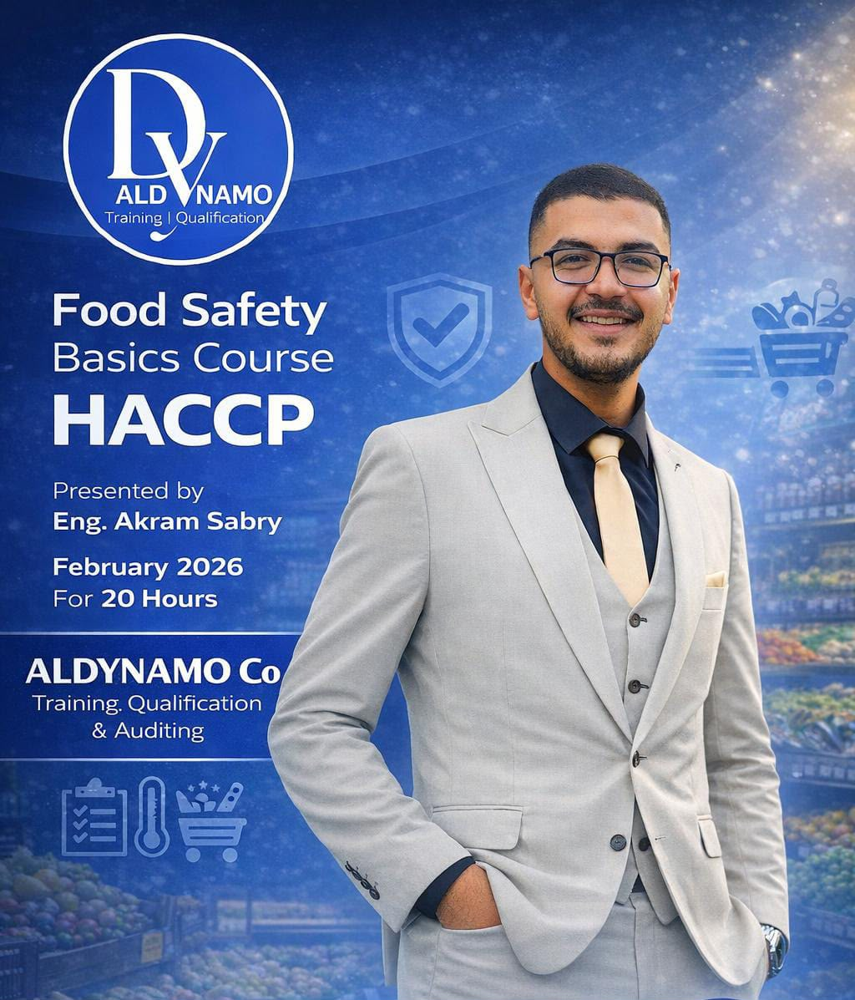
تعرّف على محاور كل برنامج والجمهور المستهدف، واسأل عن المحتوى النهائي والمواعيد المتاحة.
ممارسات التصنيع الجيد GMP، والنظافة الجيدة GHP، والتخزين الجيد GSP.
تفاصيل البرنامج ←مبادئ تحليل المخاطر ونقاط التحكم الحرجة وخطوات إعداد الخطة.
تفاصيل البرنامج ←إدارة العمليات والمسؤوليات وقياس الأداء والتحسين.
تفاصيل البرنامج ←برامج المتطلبات الأولية وتحليل مخاطر سلامة الغذاء.
تفاصيل البرنامج ←التخطيط للمراجعة وجمع الأدلة وكتابة النتائج ومتابعتها.
تفاصيل البرنامج ←إعداد الوثائق والسجلات ومراجعتها وضبطها.
تفاصيل البرنامج ←الاستعداد للرقابة والتفتيش والرجوع للمصادر الرسمية.
تفاصيل البرنامج ←تختلف المحاور بحسب احتياجات الجهة ومستوى المشاركين. تواصل لتأكيد المحتوى النهائي والمواعيد والرسوم وطريقة التنفيذ قبل التسجيل.
اختر السيناريو الأقرب لوضع منشأتك، وسنحدد الخطوة العملية التالية.
تأسيس نظام مناسب من البداية دون تعقيد أو مستندات غير ضرورية.
مراجعة الجاهزية وترتيب الأولويات قبل الزيارة أو التدقيق.
تحليل السبب الجذري ووضع CAPA يمكن للفريق تنفيذها ومتابعتها.
تدريب مخصص يربط المتطلبات بواقع العمليات داخل منشأتك.
التعرف على المنتجات والعمليات والوضع الحالي والنتيجة المطلوبة.
مقارنة الوضع الحالي بالمتطلبات وتحديد المخاطر والأولويات.
تطوير الوثائق والسجلات ودعم الفريق أثناء التطبيق الفعلي.
مراجعة النظام، متابعة CAPA، وقياس فعالية الإجراءات.
نحوّل متطلبات الجودة وسلامة الغذاء إلى ممارسات يفهمها الفريق ويستطيع الحفاظ عليها.
أخصائي إدارة الجودة.
مدير توكيد الجودة.
باحث ماجستير في إدارة الجودة — AASTMT، وبكالوريوس العلوم في الكيمياء — جامعة الإسكندرية.
نماذج مصورة من تقييمات المشاركين. تُعرض الآراء دون بيانات تعريفية غير لازمة.
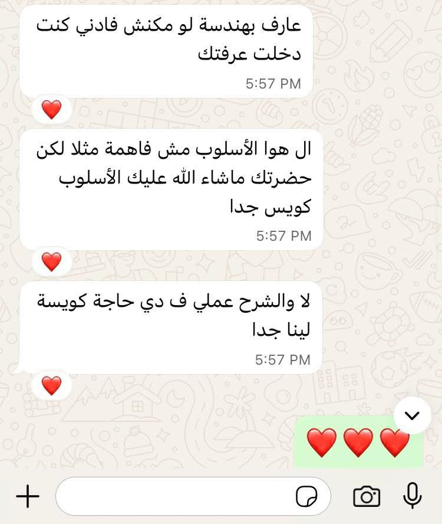
شاهد جانبًا من آراء المشاركين في البرامج التدريبية.
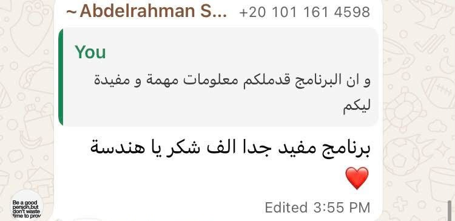
نماذج من الانطباعات بعد التدريب والتعاون.
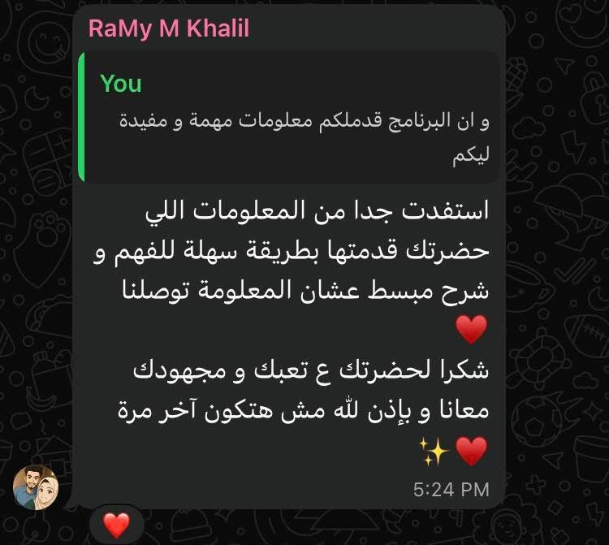
المزيد من التقييمات متاح في معرض الآراء الكامل.
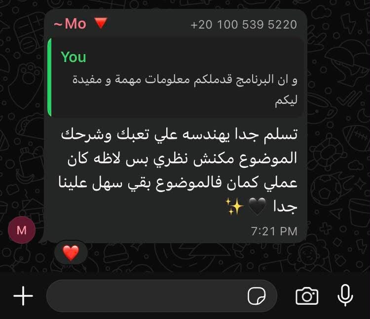
انطباعات إضافية من المشاركين في البرامج.
نماذج من آراء العملاء والمتدربين.
تقييمات مصورة من تجارب تدريبية مختلفة.
جانب من آراء المشاركين بعد التدريب.
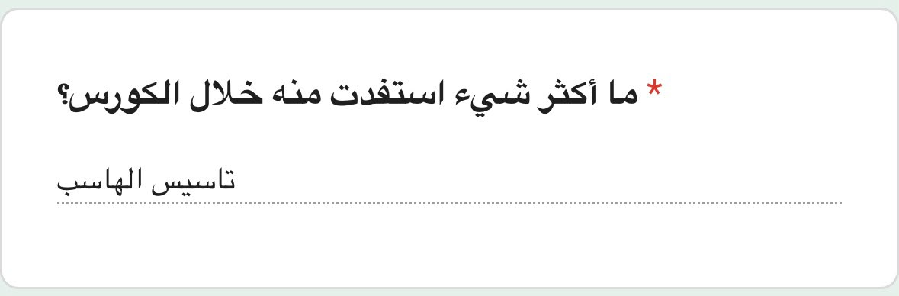
نماذج إضافية من التقييمات المصورة.
أجب عن 3 أسئلة قصيرة للحصول على توجيه أولي، أو تواصل مباشرة إذا كنت تعرف الخدمة التي تحتاجها.
استشارات HACCP وISO 22000 وISO 9001 وBRCGS، تأهيل المنشآت للتفتيش، المراجعات الداخلية، تقييم الموردين، وتدريب فرق الجودة وسلامة الغذاء.
تبدأ برسالة قصيرة لفهم النشاط والمنتج والهدف، ثم تقييم الوضع الحالي وتحديد الفجوات وخطة العمل المناسبة.
نعم، تتوفر برامج تدريبية للأفراد وفرق المصانع في HACCP وISO والمراجعة الداخلية وممارسات التصنيع والتوثيق الجيد.
أساعد في تحديد الاحتياج والربط بمقدمي خدمات مناسبين؛ أما التنفيذ الفني فيكون من الجهة المقدمة. وبالنسبة للتحليل، يُرجى التأكد من أن نطاق اعتماد المعمل يشمل الاختبار المطلوب.
اطلب استشارة في الجودة وسلامة الغذاء، أو المساعدة في الوصول إلى مقدم خدمة مساندة. اختر نوع الطلب؛ وسنجهّز رسالة واتساب بالمعلومات التي تدخلها لتراجعها قبل الإرسال.